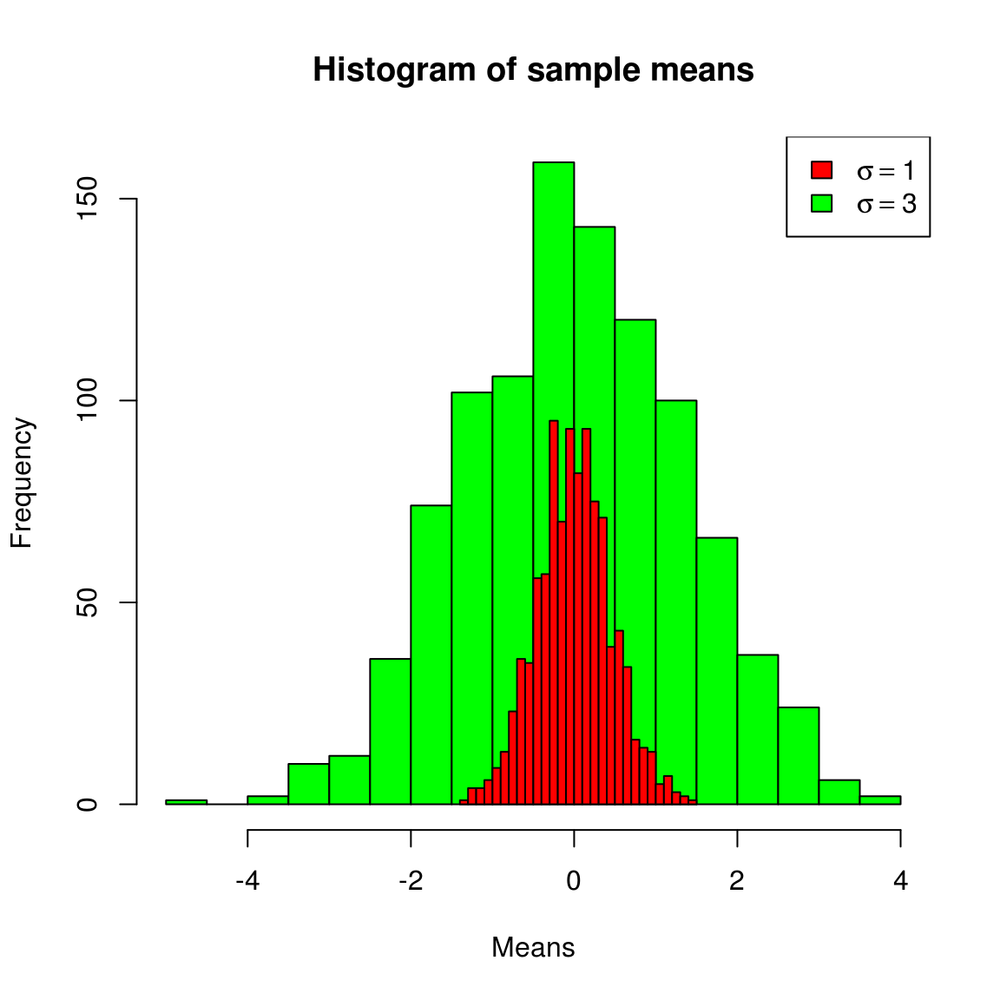

5 T检验
5.1 单样本T检验
5.1.1 前提条件
使用T检验，前提条件必须是满足正态分布，如果样本量足够多的时候，根据中心极限定理，数据分布不呈正态也是没问题的。
5.1.2 数据标准化
在满足前提条件的基础上，我们假定均值的分布是呈正态的。
简单点说，我们的任务是看样本均值偏离总体均值有多远，越远则p值越小，这是绝对正相关的。那么直接计算 \(| \bar{x} - \mu |\) 行不行？显然可以，但是it depends。
m1 <- get_sample_mean(5, rnorm(1000))
m2 <- get_sample_mean(5, rnorm(1000, sd=3))
hist(m2, col="green", main="Histogram of sample means", xlab="Means", breaks=30)
hist(m1, col="red", add=T, breaks=30)
legend(legend=c(expression(paste(sigma==1)), expression(paste(sigma==3))), fill=c("red", "green"), "topright")
我们知道正态分布由两个参数决定，均值和方差，所以 \(| \bar{x} - \mu |\) 的大小，不能直接对应到p值，从上图绿色中抽到一个\(| \bar{x} - \mu | = 3\) 的样本，概率并不低，但从红色分布中得到这样一个样本，几乎是不可能的。
拿 \(| \bar{x} - \mu |\) 来度量的话，你必须提供 \(sd(\bar{x})\) ，\(| \bar{x} - \mu |\) 不能直接比较。
如果\(sd(\bar{x})\) 相同的话，\(| \bar{x} - \mu |\) 就是很好的度量方法，它是可比较的，值越大，p值越小。那么我们需要做的，就是把数据压缩到同一个scale上，既然均值分布呈正态分布，而所有的正态分布都可以scale到标准正态分布上，显然我们可以用相同的方法来处理，把数据统一scale到 \(SEM = 1\) ，于是差值 \(| scale(\bar{x}) - \mu |\) 就完全可以拿来比较，年纪大点的人，上学时候p值是通过查表获得的，查表用的值就是 \(| scale(\bar{x}) - \mu |\) 。
5.2 Z检验
在讲T检验前，先回顾一下Z检验，标准正态分布称之为Z分布，根据Z分布来做统计检验，便是Z检验。 我们把一个正态分布scale到标准正态分布上，通过: \[ \frac{x-\mu}{sd}\]
在这里检验的统计量是均值 \(\bar{x}\) ，均值的sd，也就是SEM， \(SEM=\frac{\sigma}{\sqrt{n}}\) ，通过 \(\frac{sd(x)}{\sqrt{n}}\) 估计，具体参考置信区间一节，
所以我们使用以下公式，把均值分布scale到z分布上： \[z= \frac{\bar{x}-\mu}{sd(x)/\sqrt{n}}\]
那么通过z值在z分布上的位置，就可以算出p值，进行z检验。
5.2.1 t检验
In theory, there is no difference between theory and practice. But, in practice, there is.
-- Jan L.A. van de Snepscheut 虽然可以直接利用正态分布来计算p值，然而理想状态很丰满，现实却很骨感，如果样本量n较大时，不单t分布逼近正态分布， \(\chi^2_{(n)}\) ,Poisson( \(lambda\) ),和二项分布B(n,p)都逼近正态，然而我们没有那么大的样本量，所以在不理想的现实中，有各种各样的检验来应对各种情景和现实条件。
我们要通过样本参数来估计总体参数，特别是对于小样本来说，非常不靠谱。可以说正态是理想状态，而T分布是其现实版本。T分布中心比正态分布平，尾巴比正态分布长，特别是在自由度较小的情况下，所以T检验计算出来的p值比Z检验要保守些。
相应的，t值的计算和z值的计算是一样的。 \[t=\frac{\bar{x}-\mu}{sd(x)/\sqrt{n}}\]
使用R进行单样本的T检验，是一件非常容易的事情。
x <- sample(1:100, 10)
print(x)## [1] 83 73 63 46 56 92 32 10 12 8t.test(x, mu=20)##
## One Sample t-test
##
## data: x
## t = 2.8014, df = 9, p-value = 0.02066
## alternative hypothesis: true mean is not equal to 20
## 95 percent confidence interval:
## 25.29383 69.70617
## sample estimates:
## mean of x
## 47.55.3 两样本T检验
和单样本T检验一样，前提条件是数据来自于正态分布，或者是样本量足够大，在这种情况下，两样本均值差的分布是呈现正态的，便可以应用T分布来计算p值。
在理解了正态分布、T分布以及p值的计算之后，我们应该很清楚，T检验就是通过计算t值来计算显著性： \[t = \frac{X-\mu}{SE}\]
这里的X是我们的统计量，如单样本的 \(\bar{x}\) ,而这里两样本，则为 \(\bar{x_1}-\bar{x_2}\) ，而SE是统计量X的标准误，单样本T检验我们使用SEM来表示均值的标准误(standard error of the means)，相应的两样本T检验，我们使用SEDM来代表均值差的标准误（standard error of difference of means）。
两样本t检验的通用形式为： \[ t = \frac{(x_1-x_2)-(\mu_1-\mu_2)}{SEDM}\]
由于零假设是均值没有差别，所以 \(\mu_1-\mu_2\) 会被假定为0.
T检验的问题就在于如何计算SE，在这里要做两样本T检验，问题就成了如何计算SEDM。
在置信区间一节里，已经介绍了如何估计SEDM。
5.3.1 成对T检验
成对数据的 \(SEDM = = \frac{s_d}{\sqrt{n}}\) 。 成对T检验本质上和单样本T检验是一样的，通过计算 \(d_i = x_{1i} -x_{2i}\) ，对d值进行单样本t检验。
data(iris)
attach(iris)
t.test(Sepal.Length, Petal.Length, paired=TRUE)##
## Paired t-test
##
## data: Sepal.Length and Petal.Length
## t = 22.813, df = 149, p-value < 2.2e-16
## alternative hypothesis: true difference in means is not equal to 0
## 95 percent confidence interval:
## 1.904708 2.265959
## sample estimates:
## mean of the differences
## 2.085333d = Sepal.Length - Petal.Length
t.test(d)##
## One Sample t-test
##
## data: d
## t = 22.813, df = 149, p-value < 2.2e-16
## alternative hypothesis: true mean is not equal to 0
## 95 percent confidence interval:
## 1.904708 2.265959
## sample estimates:
## mean of x
## 2.0853335.3.2 方差相同的两样本T检验
这种情况下 \(SEDM = = \sqrt{\frac{s_p^2}{n_1}+\frac{s_p^2}{n_2}}\) , 自由度是 \(n_1+n_2-2\) 。 其中 \(s_p^2\) 是合并方差： \(s_p^2=\frac{(n_1-1)s_1^2+(n_2-1)s_2^2}{n_1+n_2-2}\)
很多教科书所说的两独立样本T检验就是指这种情况。记得以前老师讲过说T检验必须满足两个条件，一是正态，二是方差齐性，说的就是这个。
当然T检验只需满足一个条件，那就是正态，方差不齐的情况下面会讲到。
方差是否相同，可以计算两个样本的方差比值，方差相同，则比值应该在1左右，而方差不同，则比值会偏离1，这个比值称为F ratio，可以使用F检验来计算方差齐性的显著性。在方差齐性的前提条件下，我们使用上面的公式进行T检验。
5.3.3 方差不同的两样本T检验
如果F检验把方差齐性的零假设给reject了，那么就得用Welch t检验。 \[SEDM = \sqrt{\frac{s_1^2}{n_1}+\frac{s_2^2}{n_2}}\] 自由度通过Welch-Satterhwaite公式计算： \[ df = \frac{(s_1^2/n_1+s_2^2/n2)^2}{\frac{(s_1^2/n_1)^2}{n_1-1}+\frac{(s_2^2/n_2)^2}{n_2-1}}\]
5.3.4 使用R进行T检验
R的stats包提供了t.test函数，可以用于各种T检验，如果只提供一组数据，则进行单样本T检验，如果提供两组数据，则进行两样本T检验，主要的参数，无非是paired，TRUE则进行成对t检验，var.equal指定方差是否齐性，TRUE则进行经典方法，FALSE则进行Welch T检验。 使用实例可参考RT-PCR一节。
5.3.5 结论
成对数据我们可以把成对的信息扔了，混在一起做两独立样本T检验，方差齐了，我们也可以把它当做不齐，用Welch方法。所以如果稀里糊涂的情况下，就用Welch T检验。
如果是成对数据，当然还是成对T检验好，比如病人在使用某药物前后的指标，如果不用成对，则病人之间的variance也混进去，方差估计会大一些，T检验的power也会减弱。
Welch T检验的自由度会比方差齐性的经典方法要小，根据T分布，自由度越小，中心越平，而尾巴越长，也就是说，观察到同样一个t值，自由度小的分布计算出来的p值会更大，换句话说，自由度越小，T检验就越保守。
这也是t.test函数默认使用Welch T test的原因，Welch T test较为保守，如果方差齐性，用经典方法可以检验出更小的差别。